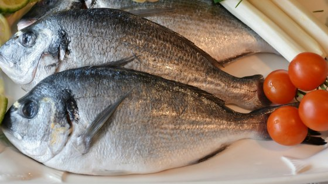

Boiled Fish, or more precisely Salt-Boiled Fish, is fish boiled with salt and thus preserved for later consumption.[1] Although this method is used in other parts of the world, it is of major commercial significance only in Southeast Asia. The shelf life of products so treated can range from as little as one or two days, up to several months. In Indonesia, this fish preservation method is known as pindang.
Back to Home